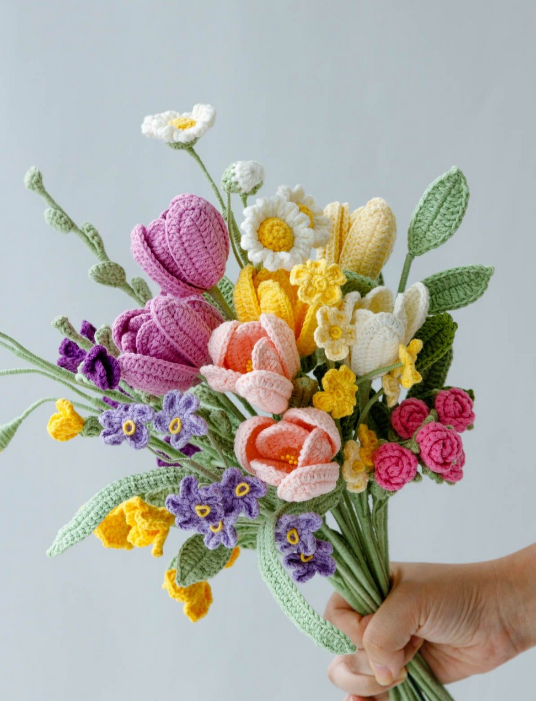
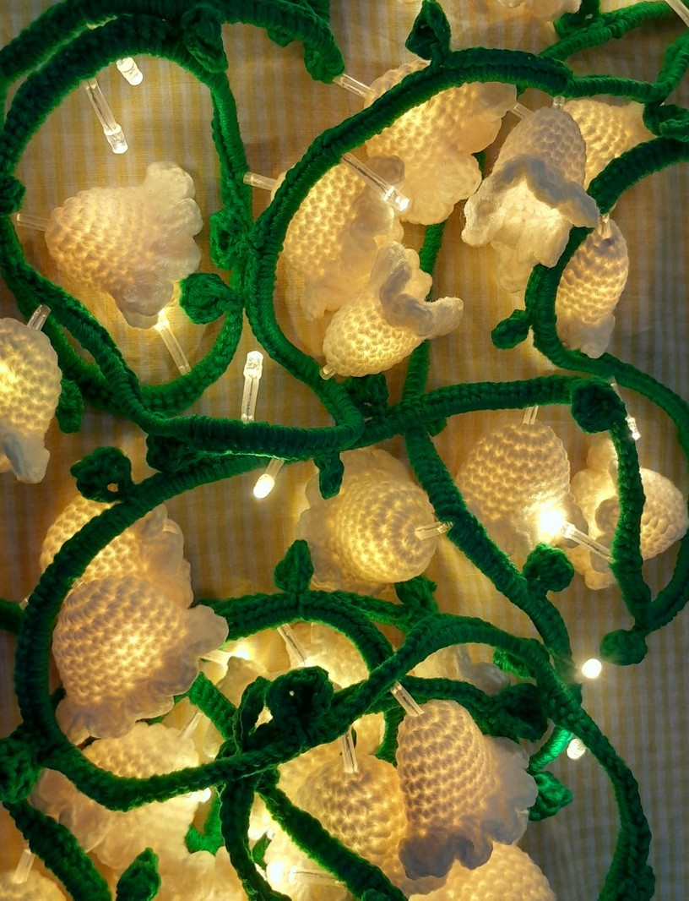
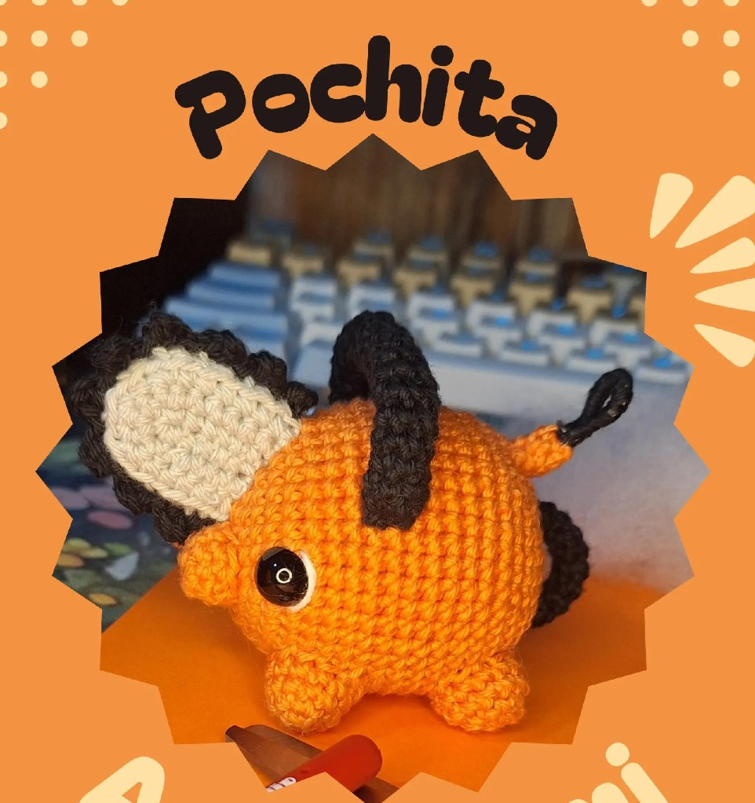
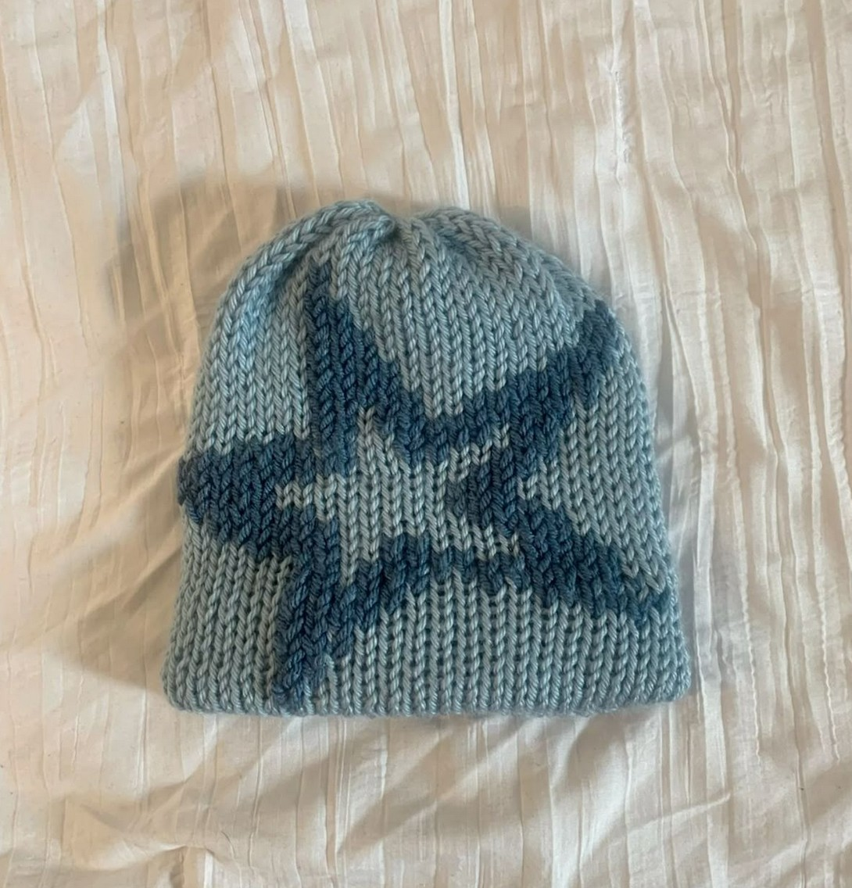
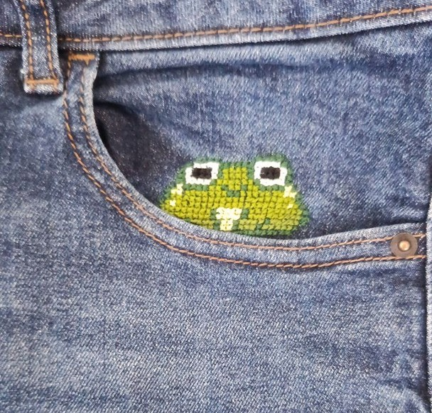

Ma vie en dehors du terminal
La cybersécurité est ma passion professionnelle, mais j'ai aussi une vie faite de laine, de voyages et de découvertes.
Chaque pièce est faite à la main.





Mes passions au quotidien
Des heures à explorer des mondes virtuels — RPG, aventure, et parfois des petits défis de hacking. La logique des jeux me rappelle celle de la cybersécurité.
Créer quelque chose de concret avec ses mains, choisir les couleurs et les points — un vrai moment de calme après une journée de cours intense.
Neuf pays visités jusqu'ici, et l'envie de continuer — direction les États-Unis pour mon prochain stage. Chaque voyage est une leçon d'adaptation, utile aussi en cybersécurité.
Pas que le travail — c'est aussi une vraie passion. Les CTF, la veille techno, les nouvelles vulnérabilités : ce monde ne cesse de me surprendre.
Programmer des systèmes qui interagissent avec le monde physique, jouer avec Arduino — là où le hardware rencontre le software.
Intéressé·e par mon profil professionnel ?
Retour au cyberfolio